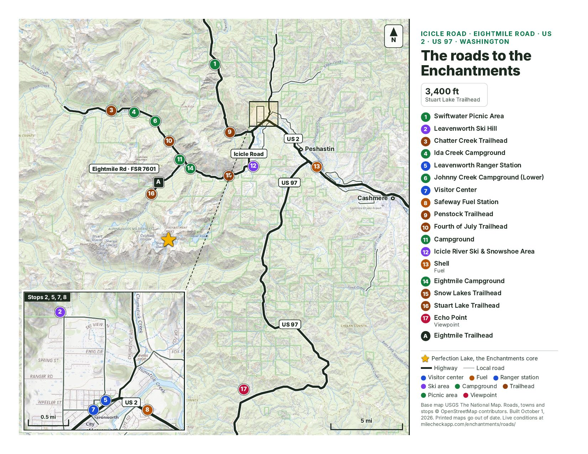

Map

Base map USGS The National Map. Roads and stops from OpenStreetMap contributors. Built October 1, 2026. Printed maps go out of date.
Forest Service orders
The Forest Service road table, as of September 3, 2026, lists Eightmile Road 7601 to the Stuart Lake Trailhead as open. Icicle Road (FSR 7600) is under a separate storm-damage closure order that starts at a point given by section, township and range, not by trailhead. The order names neither trailhead and says nothing about a detour. Read it before you drive to Snow Lakes.
Checked 2026-09-24 by reading the Forest Service pages. Not a live feed. Read the links before you drive.
- Fire restrictions lifted — forest-wide, September 18, 2026
The forest rescinded all public-use fire restrictions on September 18, 2026 (Forest Order 06-17-00-2026-16 terminated; the Stage 2 order 06-17-00-2026-21 is no longer listed). The permit area's own rule stands: no fires above 5,000 feet or within 1/2 mile of any lake, and no campfires on the Stuart Lake, Colchuck Lake and Snow Lakes trails. Pressurized gas stoves are allowed.
The Forest Service page - Icicle Road (FSR 7600) — storm-damage closure order through December 31, 2027
Forest Order 06-17-07-2026-11 (effective May 20, 2026, through December 31, 2027) closes Forest System Road 7600 'starting in Sec. 1, T. 24 N., R. 15 E and continues to the end.' The forest's road table, as of September 3, 2026, describes the damage as 'beginning near Eightmile' (landslides, washouts) and lists Eightmile Road 7601 to Stuart Lake Trailhead as open. Snow Lakes Trailhead is at mile 4.3 of Icicle Road, below the Eightmile turnoff. The order names neither trailhead. Check the road links before you drive.
The Forest Service page - Enchantment Permit Area — no closure order listed
As of the checked date, the forest alerts page lists no closure order for the permit area or its trailheads. The Little Giant Fire closure (order 06-17-07-2026-40, September 3 to October 31, 2026) does not reach Icicle Road, FSR 7601, the Enchantments or the Alpine Lakes Wilderness. Wildfires remain active in the region — check the fires list and the road links before you drive.
The Forest Service page
Trailheads
Snow Lakes Trailhead
Icicle Road for 4.3 miles from Leavenworth, below the Eightmile turnoff. Vault toilets. The east end of the traverse.
Stuart Lake Trailhead
Icicle Road about 8.5 miles, left on Eightmile Road, stay right on FSR 7601 and follow it about 4 miles. The Forest Service says the road is steep and becomes washboarded, recommends high clearance and 4x4 if possible, and closes FSR 7601 to vehicles each winter. Colchuck Lake, Stuart Lake and the west end of the traverse.
Eightmile Trailhead
On Eightmile Road, FSR 7601, before the Stuart Lake Trailhead. Eightmile Lake and the Windy Pass trail.
Parking and permits
Parking needs a Northwest Forest Pass, an America the Beautiful pass, or the $5 day pass. From May 15 through October 31 a day-use permit is free and self-issued at the trailhead. Camping in the permit area needs an overnight permit from Recreation.gov. The lots fill. Carpool or get dropped off.